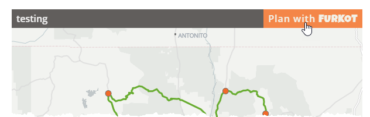
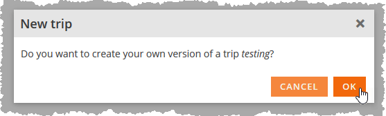
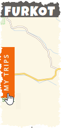
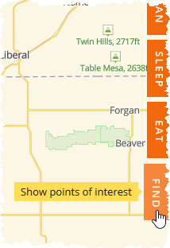
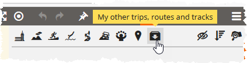
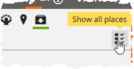
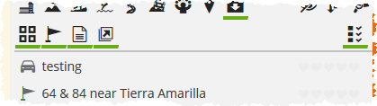
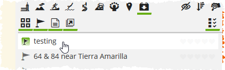
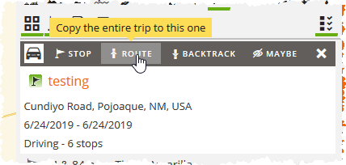

Marker Information
Show Instructions
TL/DR: Click any marker, or the current location indicator, and information will be displayed here. Use the various map controls to show/hide things. Happy browsing. :0)
This map contains places we've been and places we might someday want to go. It's mainly meant so that we can look up places when we're out and about, but others might find some interesting places to visit too.
Many, many more POIs and routes are yet to be added, and lots of clean-up is needed to the ones already present. All locations are approximate. No promise is made that any POI or route currently exists and/or has any of the properties or features described herein. Use at own risk.
Map Controls
- Filters click to show/hide filter options panel.
- Expand click to zoom/pan to display all visible markers on one screen.
- Re-center click to zoom/pan map to original center (Colorado, USA).
- Clustering click to toggle the clustering of markers.
- Traffic click to toggle the traffic layer.
- Troubleshooting click to toggle troubleshooting.
-
Location click to show your current location. You will need to allow the browser to use your location. This will then:
- Display the GPS coordinates and accuracy of your location in the locator control area.
- Start watching your movements (less stalker-y than it sounds: location data is not stored).
- Display your approximate current location on the map with a pulsating blue circle:
- Click the current location icon on the map to show additional information in this side panel about, yup, you guessed it, your current location.
- Click the crosshairs again at any time to pan/zoom to your current location.
- Click the close icon to stop location tracking (icon only displays when location tracking is active).
Routes
Routes are shown by colored lines on the map. They also have route markers showing end points. Some also have markers which are via points to force following a specific path. Route markers are not included in any counts above.
Route lines are colored randomly each time you load the page; there is no classification or rating system in place. Sometimes routes overlap, which can indeed make distinguishing between routes difficult. Look for places where they do not overlap and find a marker in that area to learn more about a particular route.
Route lines and route markers can be toggled on/off separately using their respective filter icons:To add a route to Furkot, the route markers must be showing. Click any route marker for a given route to display the info, then scroll down in the side panel to the Plan With Furkot widget. Note that when you add the route, ALL the markers for that route will be added to your trip; you do not have to add each route marker individually.
- Routes
- Route Markers
- Click the Plan with Furkot link in upper right corner of tripshot widget. Opens Furkot UI.
- When prompted to create your own version of a trip {trip name}, click OK. This will create and display your copy of the trip.
- If you're just starting your trip planning and this is the first thing you've added and you don't care to save the route as a separate entity all its own, you can start adding other stops and routes to this trip.
- Otherwise, continue below to add this route to a a different trip (existing or new).
- Click the My Trips tab.
- Open (or create) the trip to which you wish to add the route.
- Click the Find tab.
- Click the My other trips, routes and tracks icon.
- Click the Show all places icon, if not already enabled.
- You should see the route, probably with a car icon unless another mode of travel was specified. If you have a lot of other trips and places you might have to scroll around to find it.
- Click the desired route to add.
- Click the Route option to add all stops it in the order provided, OR click the Backtrack icon to add all stops in reverse order. (NOTE: clicking the Stop or Maybe options add a stop to your trip plan but then cannot be deleted or manipulated so we do not suggest using them.)
- Rearrange to suit yourself!
Compatibility / Requirements
This does require an internet connection. Use it on a device with GPS if you're concerned about getting the best location accuracy. It should work on current browsers, both desktop and mobile. However, we make no promises about it being pretty or easy to work with on small screens**, on any given device, or on any given operation system. We have used it ourselves on Chrome (desktop, android Galaxy Note 9, iOS iPad Pro), Firefox (desktop), and Safari (iPad iPad Pro).
** If you are on a small device such as a smartphone, landscape mode and pinch-and-zoom is your friend. That, or a magnifying glass.
Filter Options
All at Once
This is useful if you've hidden a bunch of categories and want to show everything again with one click.
This is useful if you only want to see one or more categories, e.g. Dog Parks, and don't want to have to turn every other category off one by one. First click this, then click the one(s) you do want to see.
by Visit Status
To toggle POIs based on whether or not Chasing Blue Sky has personally visited it or not, use these two filters.*Visited
Not Visited
by Category
To toggle POIs in a particular category, click that category's checkbox.*T = Total; V = Both Visited; 1 = One Visited; N = Not Visited; U = Unknown